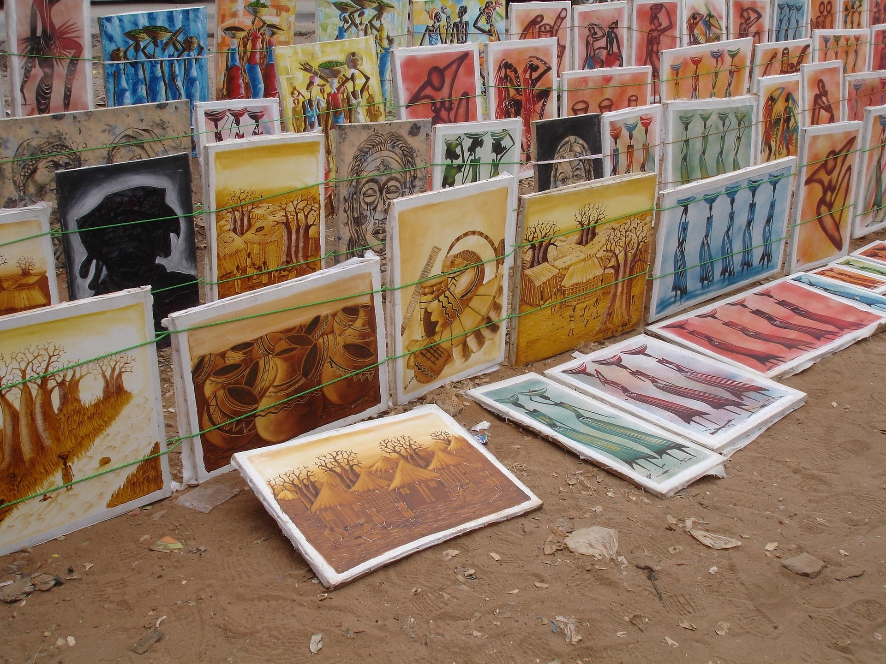

Informações
Luanda é a capital de Angola e uma cidade situada na costa oeste do país, junto ao Oceano Atlântico. Fundada em 25 de janeiro de 1576, possui uma história marcada por diferentes períodos históricos e por uma grande diversidade cultural. Atualmente, é um dos principais centros políticos, económicos e culturais de Angola.

| Luanda - História, Cultura e Sociedade | |||
|---|---|---|---|
| Categoria | Informação | Descrição | Importância |
| História | Fundação da cidade | Luanda foi fundada em 25 de janeiro de 1576 por Paulo Dias de Novais. | A fundação marcou o início do desenvolvimento de Luanda como cidade e centro político da região. |
| Independência de Angola | Angola tornou-se independente de Portugal em 11 de novembro de 1975. | Luanda tornou-se a capital do novo Estado independente de Angola. | |
| Cultura | Música e dança | Luanda possui uma forte tradição musical, destacando-se ritmos como o Semba e a Kizomba. | A música e a dança fazem parte da identidade cultural da cidade. |
| Gastronomia | A gastronomia luandense inclui pratos tradicionais angolanos, como a muamba de galinha, o calulu e o funge. | A gastronomia representa a diversidade cultural e as tradições de Angola. | |
| Economia | Centro económico | Luanda concentra uma grande parte das atividades económicas, empresariais e financeiras de Angola. | A cidade desempenha um papel central na economia e no desenvolvimento do país. |
5 Curiosidades sobre Luanda
A Baía de Luanda
A Baía de Luanda é um dos espaços mais conhecidos da cidade e está associada à marginal, ao lazer e à vida urbana junto ao Oceano Atlântico.
A Ilha de Luanda
A Ilha de Luanda, também conhecida como Ilha do Cabo, é um dos locais associados às praias, restaurantes e atividades de lazer da capital.
A Fortaleza de São Miguel
A Fortaleza de São Miguel é um importante elemento do património histórico de Luanda e está ligada à história militar e colonial da cidade.
O Semba
Luanda possui uma forte ligação ao Semba, um dos géneros musicais mais importantes da cultura angolana.
Uma cidade multicultural
Ao longo da sua história, Luanda tornou-se um espaço de encontro de diferentes povos, culturas e tradições, contribuindo para a diversidade cultural da cidade.